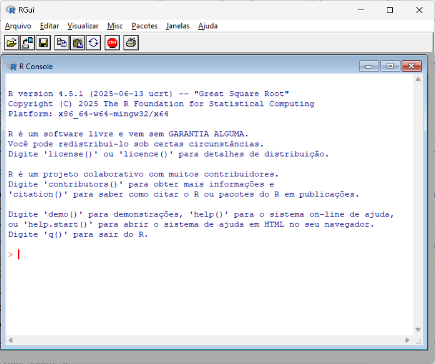
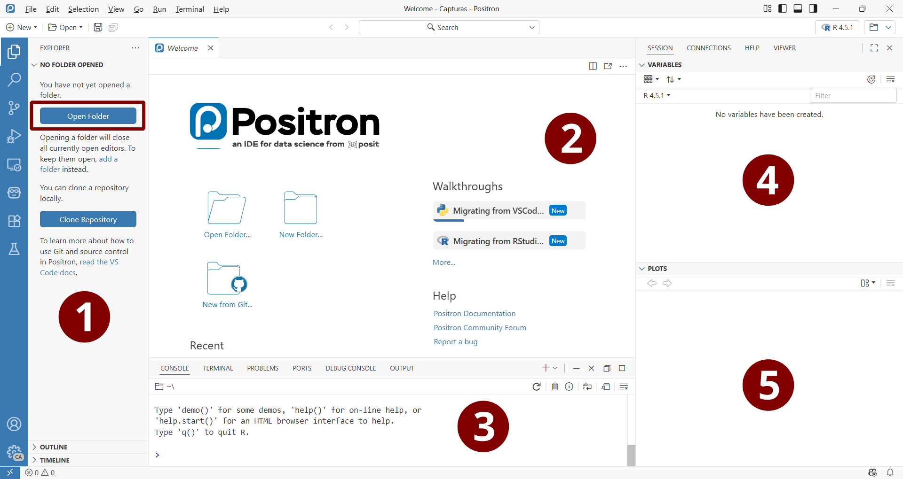
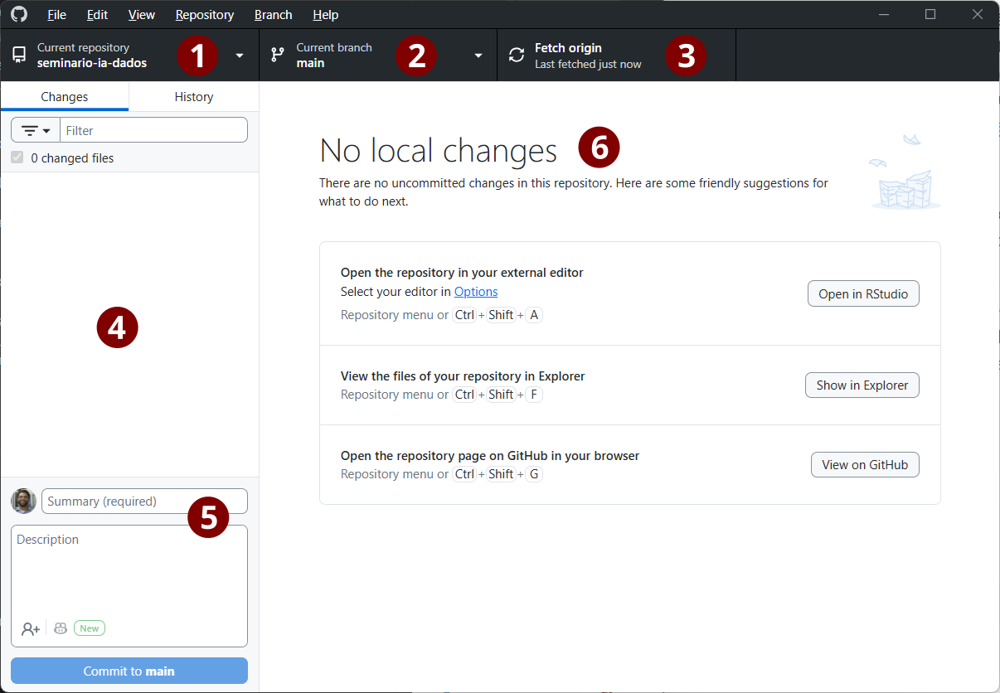
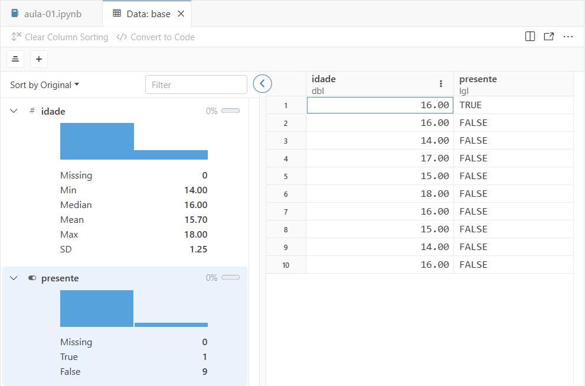
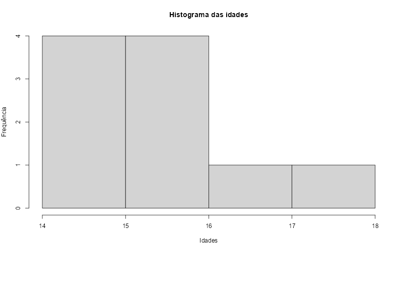
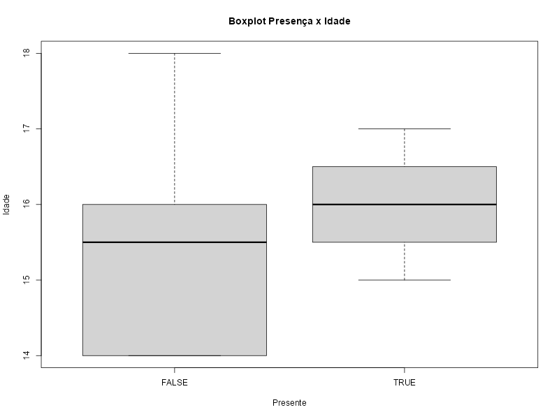
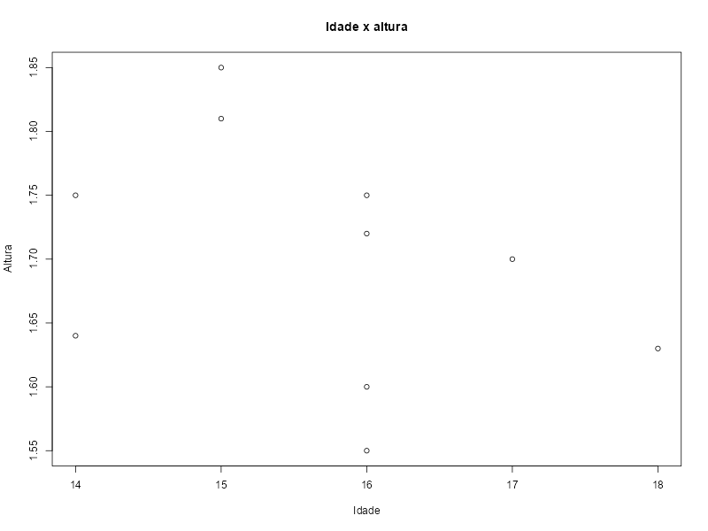
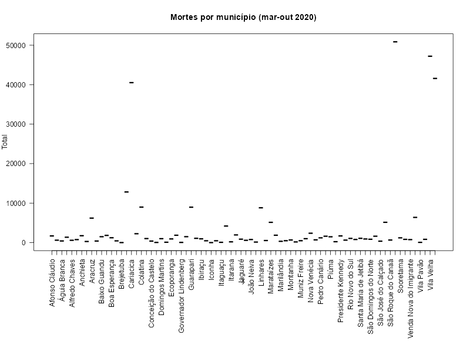

[1] "Iniciando a programação em R!"Seminário de Metodologia de Pesquisa X (PPGP-0114) - 2025/2: Aula 01
- Tema: Análise Computacional de Dados Textuais
- Responsável: Prof. Dr. Hugo Cristo Sant’Anna - hugo.santanna@ufes.br
1. Instalação do ambiente de desenvolvimento
1.1 Linguagem R
As análises serão escritas na linguagem R, específica para a realização de computação estatística. R foi criada em 1993 como alternativa de código aberto à linguagem S, desenvolvida inicialmente em 1975 pela equipe Bell Labs. A versão mais recente é 4.5.2 (21/10/2026), mas todos os scripts da disciplina funcionarão nas versões 4.5.x.
Faça o download do instalador R no computador que será utilizado para as atividades da disciplina, de acordo com o seu sistema operacional (Windows, macOS ou Linux). Siga os passos da instalação, aceitando as sugestões padrão. Ao término do processo, procure pelo ícone do programa e o execute. Se estiver tudo correto, a tela a seguir será exibida:

Na imagem abaixo, observa-se que ambiente gráfico do R é dividido em duas principais áreas: console (à esquerda da imagem) e editor R (à direita). O console serve para receber instruções da linguagem em modo interativo, isto é, linha após linha. Já o editor de código permite a escrita de scripts mais longos, que podem ser executados por trechos ou integralmente.

Dica: o ambiente R não é iniciado automaticamente com o Editor R visível. Para criar um novo script, selecione a opção
Arquivo > Novo Script(CTRL+N).
Embora seja possível utilizar o ambiente gráfico que acompanha a distribuição R, há outros editores mais poderosos e amigáveis, que incluem recursos tais como colorização diferencial dos elementos da linguagem (funções, variáveis, operadores etc.), exibição de números de linha, autocompletação de código e visualização de gráficos e bases de dados de modo integrado.
1.2 Positron
Há dois principais editores alternativos para a linguagem R: RStudio e Positron, ambos gratuitos e desenvolvidos pela empresa Posit. Nesta disciplina, utilizaremos Posit, mais recente, mais leve e com suporte a notebooks.
Faça o download do instalador de Positron e siga os passos sugeridos. Se a instalação for bem-sucedida, você poderá executar o programa e visualizará a interface a seguir:

As áreas indicadas na imagem são as mais importantes do editor:
- Explorador de arquivos: arquivos do projeto atual, sejam scripts da linguagem R (.R), notebooks (.ipynb), imagens (.PNG, .JPG, .PDF) ou dados (.XLSX, .CSV, .TXT).
- Editor de código: área em que escreveremos scripts na linguagem R e comentários Markdown.
- Console: área para monitorar o funcionamento do motor da linguagem R e executar linhas de código de modo interativo.
- Variáveis da sessão: listagem dos vetores, dataframes e outras estruturas de dados manipulados pelo notebook atual.
- Saída gráfica: visualização de gráficos gerados pelo notebook.
Dica: sempre trabalharemos em pastas, não em arquivos isolados. O botão
Open Folderna área (1) da imagem permite a seleção de uma pasta de trabalho, assim como a opçãoFile > Open Folder(CTRL+K seguido de CTRL+O).
1.3 GitHub
GitHub é uma plataforma proprietária (leia-se paga, porém com planos gratuitos) da Microsoft destinada à criação, armazenamento, gestão e compartilhamento de repositórios de código. Originalmente pensada para desenvolvedores da área da Computação, foi adotada por pesquisadores das vertentes computacionais das ciências humanas, sociais e naturais com o intuito de apoiar práticas de ciência aberta e reprodutibilidade.
Utilizaremos GitHub em duas principais frentes:
- Clonagem dos notebooks de Positron referentes às aulas e publicação dos trabalhos individuais;
- Recuperação de bases de dados textuais que serão utilizadas nas demonstrações.
Para computadores pessoais executando Apple macOS e Microsoft Windows, recomenda-se a instalação de GitHub Desktop, a versão da plataforma com interface gráfica com o usuário. Sua utilização é mais simples e visual, dispensando a memorização dos comandos necessários para a clonagem, edição ou publicação de repositórios.
Concretamente, GitHub permite que um projeto seja desenvolvido por mais de uma pessoa sem que haja conflitos nas alterações dos trechos de código. É sempre possível visualizar se modificações feitas por pessoas diferentes causarão problemas, evitando que programas que funcionam normalmente apresentem bugs após atualizações.
Além disso, GitHub permite que o mesmo usuário tenha cópias atualizadas de seu código em diferentes máquinas, sem precisar se preocupar em rastrear quais arquivos (ou partes deles) foram modificados. Do ponto de vista da reprodutibilidade de análises computacionais, GitHub oferece um “pacote” para o cientista distribuir suas pesquisas que reúne scripts, bases de dados e saídas (tabelas, gráficos etc.).

As áreas indicadas na imagem são as mais importantes da plataforma:
- Repositório: seleção do repositório a recuperar ou publicar na conta do GitHub. A aba lista todos os repositórios vinculados à conta, sejam eles criados pelo usuário atual ou clonados de outros usuários.
- Ramo: versões disponíveis do repositório (quando houver).
- Recuperação: botão para recuperar a última versão do repositório hospedado na nuvem do GitHub.
- Arquivos modificados: lista dos arquivos que sofreram alterações na máquina local, quando comparados aos arquivos disponíveis na nuvem.
- Resumo e comentários: identificação do conjunto de modificações realizadas, para permitir que outros desenvolvedores saibam o que foi alterado e decidam se devem ou não recuperar o repositório.
- Visualização do versionamento: indicação de trechos dos códigos em que haja diferença entre a versão que está na máquina local e aquela que está na nuvem de GitHub.
Para importar um repositório para GitHub Desktop, é necessário localizar o respectivo endereço na Web, seja por indicação, seja acessando a página no site do GitHub. Por exemplo:
Observe que a identificação de todos os repositórios segue a estrutura:
https://github.com/ + nome_do_usuário_GitHub + / + nome_do_repositório
Uma vez identificado o endereço do repositório (área 1 da imagem), procure pelo botão <> Code indicado na área (2) da página Web. Há duas opções para recuperar o repositório (3):
- Open with GitHub Desktop: se a aplicação estiver instalada, será aberta automaticamente após o clique e o repositório poderá ser clonado.
- Download ZIP: a versão comprimida (“zipada”) do repositório será enviada como download para o navegador.
Dica: Quando um repositório de terceiros é clonado, cria-se uma versão dele em sua própria conta do GitHub, sem afetar o repositório original. Para que seja possível adicionar colaboradores ao projeto, com direito de alterar os arquivos, é necessário indicar o usuário em na opção
Settings > Collaborators.
1.4 Ollama
Ollama é uma plataforma de código aberto destinada à execução de modelos de linguagem de larga escala localmente. A vantagem da plataforma, quando comparada às alternativas online (ChatGPT, Gemini, Claude etc.), consiste na dispensa de criação de contas, assinaturas ou compartilhamento de dados com as empresas proprietárias das plataformas.
Uma vez concluídos o download e instalação, procure o ícone da “llama” e o execute — barra de ícones ocultos no Windows (canto inferior direito) e barra superior do sistema, no macOS, próximo ao volume, Bluetooth e relógio.

A tela acima tem três principais seções:
- Histórico e nova conversa: lista dos chats anteriores e opção de iniciar um novo. As configurações de Ollama estão disponíveis na parte inferior da lista de chats.
- Envio de mensagens: campo para a digitação de prompts, por enquanto ainda restritos a textos. Outras ferramentas, como LM Studio, permitem o envio de imagens e áudio como prompts para os modelos locais.
- Seleção do modelo: lista de modelos instalados no computador atual e opção para buscar e baixar automaticamente outros disponíveis no site de Ollama.
Ao longo deste seminário, utilizaremos dois modelos de linguagem, ambos abertos e mantidos pelo Google: gemma3:1b (recomendado para computadores com 4GB de RAM), gemma3:4b (acima de 8GB) e embeddinggemma. Para instalá-los, digite seus nomes como indicados na campo dos modelos e aguarde as instalações. Ao final do processo, você poderá escrever prompts e testar as capacidades dos modelos:
Dica: Ollama é carregado automaticamente quando seu computador inicia, seja Windows ou macOS, o que pode causar lentidão. Você pode desabilitar esta opção nas preferências do seu sistema operacional. Ao enviar o primeiro prompt, Ollama costuma demorar um pouco em função do carregamento do modelo. As respostas subsequentes tendem a ser mais rápidas, dependendo da configuração do seu computador.
Pronto! O ambiente de desenvolvimento do seminário está totalmente configurado 😊
1.5 Executando o ambiente
As aulas do seminário serão baseadas em notebooks, que são como cadernos de anotações digitais para pesquisadores e analistas de dados. O editor Positron permite a criação e edição de notebooks interativos, isto é, documentos que mesclam textos, imagens e código executável. Além disso, permite exportar notebooks em formatos como HTML, PDF e Microsoft Word, como se fossem artigos ou relatórios de pesquisas.
Este documento é um notebook: o arquivo aula-01.ipynb foi integralmente editado com Positron e contém trechos executáveis de código. Nos passos a seguir, faremos download do documento a partir do repositório GitHub do seminário e testaremos a execução de código.
- Acesse https://github.com/hugocristo/seminario-ia-dados
- Clique no botão
<> Codee selecione a opçãoOpen in GitHub Desktop - O navegador perguntará se deseja abrir o aplicativo GitHub Desktop. Aceite!
- A tela exibida a seguir define em qual lugar do seu computador deseja salvar os arquivos do repositório a ser clonado.
- Selecione uma pasta fácil de localizar e clique em
clone!

Localize o editor Positron entre seus aplicativos e o execute. Em seguida, selecione a opção File > Open Folder e procure a pasta em que o repositório foi salvo. A listagem dos arquivos das aulas será exibida com a seguinte estrutura:

Ao selecionar a pasta aula-01, a listagem dos arquivos inclui: notebook da aula, aula-01.ipynb; o documento aula-01.html, que consiste no relatório gerado a partir do notebook no formato HTML; e duas pastas com imagens.

Selecione o arquivo aula-01.ipynb e estará tudo pronto para iniciarmos os testes de execução do notebook.
2. Princípios básicos de programação em R com notebooks
Notebooks são documentos interativos que combinam e intercalam textos, imagens e trechos de código. Diferentemente da programação tradicional em R, optamos por elaborar as análises em doses pesquenas, como “colheres de chá”. Assim, podemos acompanhar a sequência de transformações dos dados sem precisar ler códigos extensos.
O trecho de código a seguir ilustra a primeira diferença entre a execução de notebooks e a leitura dos relatórios gerados. Se você está vendo este conteúdo na página Web do repositório GitHub, visualizará uma linha de código R sem possibilidade de execução, mas com a opção de copiá-la e executá-la diretamente no console do R ou colá-la em outro script.
Mas se você estiver no Positron, visualizará o botão ▷ (run/executar) ao lado esquerdo da célula. Isto significa que se trata de um trecho de código em R que pode ser executado. Os resultados da execução aparecem imediatamente a abaixo de cada célula. Experimente!
O código acima parece com o primeiro, pois a função print() é a mesma. Ela serve para imprimir o argumento informado entre parênteses. No entanto, o conteúdo entre parênteses em cada exemplo é diferente: "Iniciando a programação em R!" e 2+2.
A linguagem R tem funções para a exibição e manipulação de diferentes tipos de dados, tais como caracteres, cadeias de caracteres (strings como a frase acima entre aspas), números (como 2), booleanos (verdadeiro/falso), vetores, matrizes e até documentos completos.
Podemos realizar operações aritméticas sobre estes dados, como a soma acima, ou processar cadeias de caracteres. Por exemplo, podemos exibir apenas parte da frase anterior:
frase <- "Iniciando a programação em R!"
frase.pedaco <- substr(frase,1,9)
print(frase)
print(frase.pedaco)[1] "Iniciando a programação em R!"
[1] "Iniciando"A função substr() (linha 2) recebe uma cadeia de caracteres como argumento e extrai uma parte dela a partir da posição fornecida — 1 a 9, correspondendo à palavra “Iniciando” da frase original.
A variável frase recebeu a frase inteira (linha 1), enquanto frase.pedaco recebeu os caracteres 1 a 9 extraídos da primeira por meio de substr(). As linhas 3 e 4 exibem a diferença entre os resultados de print() para cada variável.
O processamento de dados no R é basicamente este: criação de variáveis, manipulação delas por meio de funções e estruturas de controle, visualização dos resultados das operações em textos, gráficos e tabelas.
2.1 Tipos de dados
Nos exemplos anteriores, conhecemos dois principais tipos de dados: cadeias de caracteres (strings) e números. Os exemplos a seguir ilustram estes e outros tipos disponíveis.
Dica: comentários em R são iniciados por
#e não são tratados como código pelo interpretador da linguagem. Comentários nos ajudam a entender o que partes específicas do código fazem.
O código acima imprime o número 2 (tipo numeric) enquanto o próximo imprime o caractere “2” (tipo character).
A diferença entre os dois casos está nas aspas da saída do segundo. Dados do tipo character sempre estarão entre aspas. A função class() informa o tipo do dado fornecido como argumento.
O tipo logical inclui NA, que é uma constante de comprimento 1 que indica valores ausentes. Ela é muito importante para a detecção de dados ausentes em bases de dados.
Operadores
Quando o tipo é numeric, podemos realizar operações aritméticas:
Para combinar todas as operações e visualizar os resultados de forma conjunta, precisamos utilizar a função print():
# soma
print(2+2)
# subtração
print(10-5)
# multiplicação
print(2*10)
# divisão
print(25/5)
# exponenciação
print(5^2)[1] 4
[1] 5
[1] 20
[1] 5
[1] 25Os tipos lógicos nos informam se um dado teste é verdadeiro ou falso (TRUE ou FALSE):
E dois textos são iguais? (Observe o sinal == para comparação)
Tudo são vetores
Em R, tudo são vetores e há mecanismos simples para gerá-los. O operador : define o intervalo (fechado) inferior e superior da sequência:
[1] 1 2 3 4 5 6 7 8 9 10 11 12 13 14 15 16 17 18 19
[20] 20 21 22 23 24 25 26 27 28 29 30 31 32 33 34 35 36 37 38
[39] 39 40 41 42 43 44 45 46 47 48 49 50 51 52 53 54 55 56 57
[58] 58 59 60 61 62 63 64 65 66 67 68 69 70 71 72 73 74 75 76
[77] 77 78 79 80 81 82 83 84 85 86 87 88 89 90 91 92 93 94 95
[96] 96 97 98 99 100Ao executarmos o código, R sinaliza os resultados por números entre colchetes (p.ex., [1] e [19] no exemplo acima), facilitando a identificação dos resultados parciais de cada operação.
A função seq() é semelhante ao operador :, porém permite definir o passo da sequência:
[1] 0 5 10 15 20 25 30 35 40 45 50 55 60 65 70 75 80 85 90 95
[21] 100Podemos compor vetores manualmente por meio da função c():
[1] "Piaget" "Vygotsky" "Skinner" "Wallon"
[5] "Bronfenbrenner" "Gibson" Veja que “Wallon” é o item 4 do vetor e “Bronfrenbrenner” é o item 5. A numeração entre colchetes o início da linha auxilia esta identificação.
Vetores e estruturas compostas de dados em R sempre se iniciam pelo índice 1, opção distinta da maioria das linguagens de programação, que iniciam em zero.
Para manipular vetores, o ideal é atribuí-los a variáveis. O sinal de atribuição é <- e remete a uma seta com a direção da operação.
# atribui o vetor à variável 'psicologos'
psicologos <- c("Piaget", "Vygotsky", "Skinner", "Wallon", "Bronfenbrenner", "Gibson")
# imprime vetor completo
print(psicologos)
# imprime item 3 do vetor (Skinner)
print(psicologos[3])[1] "Piaget" "Vygotsky" "Skinner" "Wallon"
[5] "Bronfenbrenner" "Gibson"
[1] "Skinner"Podemos alterar o item da mesma forma:
# altera 'Skinner' para 'B. F. Skinner'
psicologos[3] <- "B. F. Skinner"
# imprime vetor atualizado
print(psicologos)[1] "Piaget" "Vygotsky" "B. F. Skinner" "Wallon"
[5] "Bronfenbrenner" "Gibson" Vetores também podem ser numéricos ou booleanos:
# vetor com idades
idade <- c(15, 16, 14, 17, 15, 18, 16, 15, 14, 16)
print(idade)
# vetor com verdadeiro/falso
booleano <- c(TRUE, FALSE, FALSE, TRUE, FALSE, FALSE, TRUE, TRUE, FALSE, FALSE)
print(booleano) [1] 15 16 14 17 15 18 16 15 14 16
[1] TRUE FALSE FALSE TRUE FALSE FALSE TRUE TRUE FALSE FALSEAssim como fizemos com cadeias de caracteres, podemos exibir itens específicos e alterar vetores numéricos:
# imprime item 1
print(idade[1])
# altera item 1
idade[1] <- 16
# imprime conjunto alterado
print(idade)[1] 15
[1] 16 16 14 17 15 18 16 15 14 16Podemos fazer operações aritméticas com vetores númericos:
# soma as idades
print(sum(idade))
# multiplica todas as idades por 10 (sem alterá-las)
print(idade*10)
# média do vetor das idades
print(mean(idade))
# mediana do vetor das idades
print(median(idade))
# desvio padrão do vetor das idades (sd, standard deviation)
print(sd(idade))[1] 157
[1] 160 160 140 170 150 180 160 150 140 160
[1] 15.7
[1] 16
[1] 1.251666A facilidade de manipulação de vetores é a base do uso de R para análise de dados. Os níveis das variáveis observadas em nossos estudos (p.ex., idade, gênero, documentos, frequências) são itens de vetores e cada observação (participante, situação, documento etc.) corresponde a um item em um ou mais vetores dados.
Data Frames
Objetos do tipo data.frame em R são coleções de variáveis cuja manipulação é semelhante à de planilhas do Microsoft Excel. Colunas e linhas podem ser rotuladas, facilitando a identificação das variáveis, e todas as operações com vetores ilustradas anteriormente também se aplicam ao tipo data.frame.
O objeto base é um data.frame com duas colunas, idades e presença, construídas a partir dos vetores idades e booleano que utilizamos anteriormente. Suponha que base é uma lista de presença em que registramos as idades de estudantes e a presença deles em um dado evento.
A chamada View(base) (linha 7) abre sua estrutura em uma nova aba, como na imagem seguinte:

data.frame.Na parte esquerda da visualização, Positron exibe o histograma de cada variável, exibindo a distribuição de seus níveis e estatísticas descritivas relevantes: dados ausentes, valor mínimo, mediana, média, valor máximo e desvio padrão. O ícone à esquerda do rótulo de cada variável indica seu tipo, por exemplo: # para numeric.
A parte direita da visualização é similar a uma planilha do Microsoft Excel, com as colunas (variáveis, com tipos) e linhas (observações). O tipo dbl para idades significa double, uma variante da representação de numeric do pacote tibble utilizado na construção de Positron. Já lgl é a indicação do tipo logical.
2.2 Funções
Até o momento, utilizamos o termo função de modo intuitivo. Podemos entendê-las como procedimentos que realizam operações sobre dados e que podem receber argumentos ou não.
Os argumentos da função são informados entre parênteses, separados por vírgulas, e as operações que ela realiza internamente se chamam corpo. Até o momento utilizamos funções com um argumento…
[1] "Esta é uma função de argumento único!"A função mean() pode ser utilizada com um único argumento (vetor) e pode receber adicionais que ajustam sua operação. Estes argumentos podem ou não ser identificados, pois a linguagem tenta interpretá-los em tempo de execução. O argumento na.rm com valor TRUE informa à função que deve remover as células vazias do cálculo da média. Quando o valor for FALSE, a função retornará um erro ao calcular médias com células vazias.
Já a função c(), que constrói vetores, pode receber inúmeros argumentos:
[1] 15 16 14 17 15 18 16 15 14 16O console de Positron permite invocar a ajuda de todas as funções da linguagem e dos pacotes adicionais por meio da combinação do símbolo ? e o nome da função.
Dica: A ajuda exibida com a execução deste comando é similar àquela exibida quando começamos a digitar o nome da função nas células de código, poré mais completa e inclui exemplos.
Há funções de propósito geral para exibição de textos em R, que nos ajudam a inspecionar objetos em uso pelo script.
print(): imprime no console (ou notebook) uma string, o valor de uma variável, uma expressão…cat(): semelhante aprint(), porém com a opção de concatenar tipos de dados separados por espaço. Requer quebra de linha explícita ao final (\n);substr(): extrai caracteres de uma string;paste(): concatena duas ou mais strings;length(): retorna o comprimento de vetores;nchar(): retorna o comprimento de strings;unique(): retorna os valores únicos de um vetor (inclusive números).
# imprime texto, número e vetor
print("Saída de texto")
print(3.14)
print(idade)
# concatena texto e vetor e termina com quebra de linha
cat("O conteúdo do vetor de idades é:",idade,"\n")
# extrai e imprime os caracteres de 18 a 27
print(substr("Extraindo apenas esta parte",18,27))
# retorna o comprimento do vetor idade (10 itens)
print(length(idade))
# retorna o comprimento de uma string (37 caracteres)
print(nchar("Esta é uma função de argumento único!"))
# concatena strings
print(paste("A primeira parte","e a segunda parte","e a terceira parte."))
# mostra idades únicas
print(unique(idade))[1] "Saída de texto"
[1] 3.14
[1] 16 16 14 17 15 18 16 15 14 16
O conteúdo do vetor de idades é: 16 16 14 17 15 18 16 15 14 16
[1] "esta parte"
[1] 10
[1] 37
[1] "A primeira parte e a segunda parte e a terceira parte."
[1] 16 14 17 15 18Algumas funções da linguagem R nos ajudam a explorar a estrutura de data.frames:
summary(): medidas-resumo da base;head(): primeiras linhas;tail(): últimas linhas;nrow(): número de linhas;ncol(): número de colunas;colnames(): rótulos das colunas;rownames(): rótulos das linhas (quando não houver, retornará strings com números).
idade presente
Min. :14.0 Mode :logical
1st Qu.:15.0 FALSE:6
Median :16.0 TRUE :4
Mean :15.7
3rd Qu.:16.0
Max. :18.0 A função hist() gera um histograma a partir da variável idade do data.frame. Para isso, recebe como argumentos um vetor de dados e um título (argumento main). O seletor $ indica qual coluna de base será utilizada na visualização.

A função as.factor() converte os níveis de varíaveis (colunas) de data.frames para categorias. No exemplo a seguir, coluna presente é transformada em categorias (TRUE e FALSE) e exibe a distribuições das idades em cada uma delas.
# transforma TRUE/FALSE em categoria
base$presente <- as.factor(base$presente)
# exibe boxplot
plot(x=base$presente,y=base$idade, main="Boxplot Presença x Idade", xlab="Presente", ylab="Idade")
Vamos adicionar mais um vetor de dados ao objeto base para testar a visualização em gráficos de dispersão. Para isso, utilizaremos a função cbind(), que adiciona uma nova coluna a data.frames existentes.
O resultado é base atualizada para incluir mais uma coluna:

base.Assim, podemos visualizar o gráfico de dispersão de idade versus altura:
# plota idade x altura
plot(base$idade, base$altura, main="Idade x altura", xlab="Idade", ylab="Altura")
Dica: a adição de novas colunas a
data.framesexistentes exige que o vetor tenha o mesmo número de linhas.
Também é possível fazer a adição utilizando o seletor $, mas para testar esta alternativa, vamos remover a coluna adicionada:
Adição por meio do seletor:
Dica: é uma boa prática inicializar a coluna, com valores vazios, antes de atribuir valores, caso isso seja feito por meio do seletor
$. Isso evita avisos do R quanto à tentativa de manipular colunas não existentes.
2.3 Estruturas de controle
Laços são estruturas que permitem repetir conjuntos de instruções por n vezes, facilitando a varredura de vetores e data.frames para realizar operações, ler ou alterar elementos. Há dois principais tipos de laços em R:
for(expressão){...}: estabelece um contador progressivo ou regressivo, por meio da expressão entre parânteses, para a execução de operações indicadas entre chaves;while(expressão){...}: executa operações até que a condição estabelecida pela expressão entre parênteses seja satisfeita.
# lista psicólogos do vetor pelo índice do item
# 'item' será 1, 2, 3, ...
for (item in 1:length(psicologos)) {
print(psicologos[item])
}[1] "Piaget"
[1] "Vygotsky"
[1] "B. F. Skinner"
[1] "Wallon"
[1] "Bronfenbrenner"
[1] "Gibson"# lista psicólogos do vetor pelo item
# neste caso, 'item' recebe o valor do item, não o índice
# item será "Piaget", "Vygotsky", ...
for (item in psicologos) {
print(item)
}[1] "Piaget"
[1] "Vygotsky"
[1] "B. F. Skinner"
[1] "Wallon"
[1] "Bronfenbrenner"
[1] "Gibson"# lista idade e altura do data.frame
for (linha in 1:nrow(base)) {
# imprime linha
cat("idade:",base$idade[linha],"altura:",base$altura[linha],"\n")
}idade: 16 altura: 1.75
idade: 16 altura: 1.6
idade: 14 altura: 1.64
idade: 17 altura: 1.7
idade: 15 altura: 1.81
idade: 18 altura: 1.63
idade: 16 altura: 1.72
idade: 15 altura: 1.85
idade: 14 altura: 1.75
idade: 16 altura: 1.55 # varre o data.frame até que encontre uma idade igual ou maior a 18
testa.idade <- 0
# começa pela primeira linha
linha <- 1
while (testa.idade < 18) {
# atribui valor ao teste
testa.idade <- base$idade[linha]
# imprime
cat("idade:",base$idade[linha],"altura:",base$altura[linha],"\n")
# avança para a próxima linha
linha <- linha + 1
}
# avisa que a idade foi encontrada
cat("Encontrei!\n")idade: 16 altura: 1.75
idade: 16 altura: 1.6
idade: 14 altura: 1.64
idade: 17 altura: 1.7
idade: 15 altura: 1.81
idade: 18 altura: 1.63
Encontrei!# altera nomes dos psicólogos do vetor
for (item in 1:length(psicologos)) {
# concatena 'Prof.' ao nome do psicólogo
psicologos[item] <- paste("Prof.",psicologos[item])
}
# imprime resultado
print(psicologos)[1] "Prof. Piaget" "Prof. Vygotsky" "Prof. B. F. Skinner"
[4] "Prof. Wallon" "Prof. Bronfenbrenner" "Prof. Gibson" 3. Importação e processamento de dados
Há diferentes formatos de bases de dados, dentre as quais destacam-se TXT (formato texto), CSV (comma-separated values) e XLSX (Microsoft Excel). Os dois primeiros são de simples manipulação em R, enquanto o último requer recursos não nativos da linguagem, que podem ser incorporados por meio de pacotes. Estes adicionam recursos extras ao R, aumentando a capacidade de importar e processar dados, realizar inferências estatísticas e gerar gráficos.
O carregamento de pacotes ocorre em duas etapas:
install.packages()solicita ao editor que faça o download e instale o pacote informado entre parênteses;library()carrega o pacote e torna suas funções disponíveis para o script ou notebook atual.
Se o pacote já estiver instalado e a função install.packages() for invocada, o ambiente R ignorará o comando. O mesmo ocorre com a função library(), de modo que a recomendação é manter essas instruções no início do programa.
3.1 Arquivos texto (TXT, CSV etc.)
Arquivos CSV são utilizados pelo poder público e em acervos abertos para a distribuição de bases de dados de diversas áreas. É possível editar esses arquivos em ferramentas como Microsoft Excel, Open Office e Google Planilhas. Por se tratarem de texto puro, os arquivos costumam ser maiores e podem apresentar limitações quanto à acentuação e uso de caracteres especiais.
Em R, a leitura de arquivos CSV é feita pela função read.csv(), que precisa da definição de três principais argumentos:
file: nome do arquivo, incluindo caminho;header: quandoTRUE, considera que a primeira linha contém os rótulos das colunas;sep: informa o separador dos campos (vírgula, ponto e vírgula ou tabulação).
O exemplo de código abaixo carrega o arquivo covid-es.csv localizado na pasta dados que acompanha este notebook. A planilha consiste em dados sobre casos e óbitos por Covid-19 entre março de outubro de 2020 no ES.

covid-es.csv.# carrega arquivo covid-es.csv
# separador ; (ponto e vírgula)
# primeira linha tem cabeçalhos
base.covid <- read.csv(file="./dados/covid-es.csv",sep=";",header=TRUE)
# visualiza data.frame
View(base.covid)
# explora a base
summary(base.covid) date state name code
Length:14742 Length:14742 Length:14742 Min. :3200100
Class :character Class :character Class :character 1st Qu.:3201600
Mode :character Mode :character Mode :character Median :3203075
Mean :3202902
3rd Qu.:3204300
Max. :3205300
cases deaths
Min. : 0 Min. : 0.00
1st Qu.: 80 1st Qu.: 0.00
Median : 1140 Median : 3.00
Mean : 6746 Mean : 20.53
3rd Qu.: 3950 3rd Qu.: 10.00
Max. :183220 Max. :509.00 A primeira coluna da planilha contém strings que representam datas e que podem ser transformadas em objetos da linguagem R que permitem operações adequadas com datas (comparações, cálculos de intervalos etc.).
A segunda (state), terceira (name) e quarta (code) colunas correspondem à UF, ao município e ao código do município (IBGE) da ocorrência e podem ser igualmente tratados como categorias (fatores).
A função tapply() é útil para realizar operações em bases de dados controlando por uma categoria, tendo uma tabela como resultado. O exemplo a seguir soma, pela função sum() os valores da coluna deaths agrupados pela coluna name, referente ao município.
Afonso Cláudio Água Doce do Norte Águia Branca
1689 608 418
Alegre Alfredo Chaves Alto Rio Novo
1360 586 759
Anchieta Apiacá Aracruz
1745 283 6203
Atílio Vivacqua Baixo Guandu Barra de São Francisco
398 1493 1822
Boa Esperança Bom Jesus do Norte Brejetuba
1226 439 6
Cachoeiro de Itapemirim Cariacica Castelo
12821 40514 2249
Colatina Conceição da Barra Conceição do Castelo
8988 1022 383
Divino de São Lourenço Domingos Martins Dores do Rio Preto
39 994 92
Ecoporanga Fundão Governador Lindenberg
931 1862 44
Guaçuí Guarapari Ibatiba
1500 8965 1080
Ibiraçu Ibitirama Iconha
956 465 2
Irupi Itaguaçu Itapemirim
466 69 4193
Itarana Iúna Jaguaré
192 1947 868
Jerônimo Monteiro João Neiva Laranja da Terra
578 777 135
Linhares Mantenópolis Marataízes
8816 526 5131
Marechal Floriano Marilândia Mimoso do Sul
1867 327 478
Montanha Mucurici Muniz Freire
664 170 477
Muqui Nova Venécia Pancas
994 2371 692
Pedro Canário Pinheiros Piúma
1207 1617 1473
Ponto Belo Presidente Kennedy Rio Bananal
229 1690 627
Rio Novo do Sul Santa Leopoldina Santa Maria de Jetibá
1063 786 1080
Santa Teresa São Domingos do Norte São Gabriel da Palha
916 848 1619
São José do Calçado São Mateus São Roque do Canaã
361 5139 652
Serra Sooretama Vargem Alta
50850 1206 820
Venda Nova do Imigrante Viana Vila Pavão
757 6385 58
Vila Valério Vila Velha Vitória
827 47202 41580 Se o resultado for transformado em data.frame pela função array2DF() e podemos gerar um gráfico:
# transforma soma em data.frame
base.csv.soma <- array2DF(tapply(base.covid$deaths, base.covid$name, sum))
# ajustamos os nomes das colunas
colnames(base.csv.soma) <- c("municipio","total")
# convertemos o município em fator
base.csv.soma$municipio <- as.factor(base.csv.soma$municipio)
# aumenta margem inferior do gráfico
par(mar=c(12,4,4,2))
# plota com rótulos do eixo em 90° (las=2)
plot(base.csv.soma$municipio,base.csv.soma$total, las=2, main="Mortes por município (mar-out 2020)",ylab="Total")
3.2 Planilhas Microsoft Excel (XLSX)
A importação de planilhas XLSX segue a mesma lógica dos arquivos CSV, porém depende da instalação e carregamento do pacote openxlsx.
Warning: package ‘openxlsx’ is in use and will not be installedA base de dados suicidios-es.xlsx contém dados sobre suicídios no Espírito Santo e foi obtida no Data SUS. A função read.xlsx() carrega a planilha disponível na pasta dados e, ao contrário do arquivo CSV, o documento XLSX contém metadados mais ricos e recursos avançados para representar diferentes tipos de dados.
# importa base xlsx
base.sus <- read.xlsx('./dados/suicidios-es.xlsx')
# sumário dos dados
summary(base.sus) meso micro municipio corte
Length:9636 Length:9636 Length:9636 Length:9636
Class :character Class :character Class :character Class :character
Mode :character Mode :character Mode :character Mode :character
fator ano total ano_num
Length:9636 Min. :2006 Min. : 0.0000 Min. :2006
Class :character 1st Qu.:2008 1st Qu.: 0.0000 1st Qu.:2008
Mode :character Median :2011 Median : 0.0000 Median :2011
Mean :2011 Mean : 0.9325 Mean :2011
3rd Qu.:2014 3rd Qu.: 1.0000 3rd Qu.:2014
Max. :2016 Max. :20.0000 Max. :2016 Um dos recursos mais importantes do pacote openxlsx consiste no salvamento de data.frames resultantes dos processamentos como planilhas Microsoft Excel — função write.xlsx(). Isso facilita a exportação dos dados processados, de modo que análises subsequentes não precisem partir dos dados brutos originais.
O exemplo abaixo exporta base.covid.soma, que consolida as mortes por Covid-19 por município em um arquivo XLSX:
4. Atividade
Explore a base de dados suicidios-es.xlsx e crie um novo notebook no Positron para realizar as seguintes tarefas:
- Quais municípios existem na base? Elabore uma lista com eles.
- Quantos casos foram registrados por municípío? Gere uma tabela e a exporte como
XLSX. - A partir da tabela gerada anteriormente, calcule as estatísticas descritivas (média, mediana e desvio padrão);
- Gere um gráfico com os municípios no eixo X e o total de casos no eixo Y.